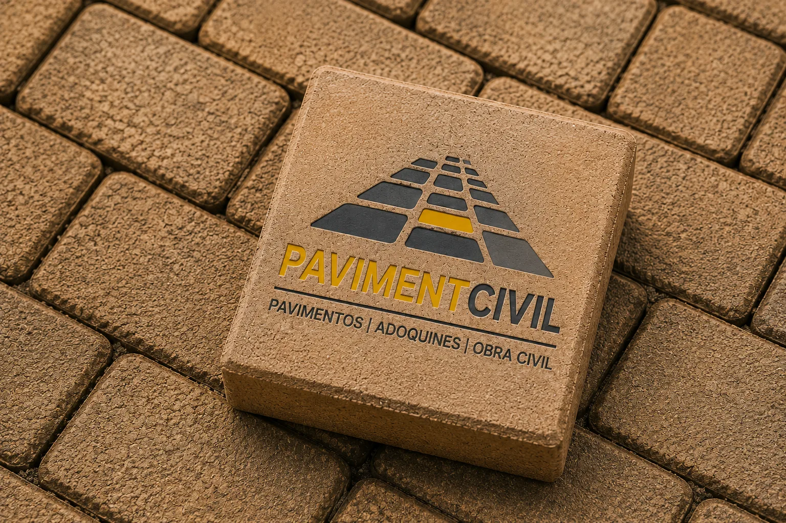
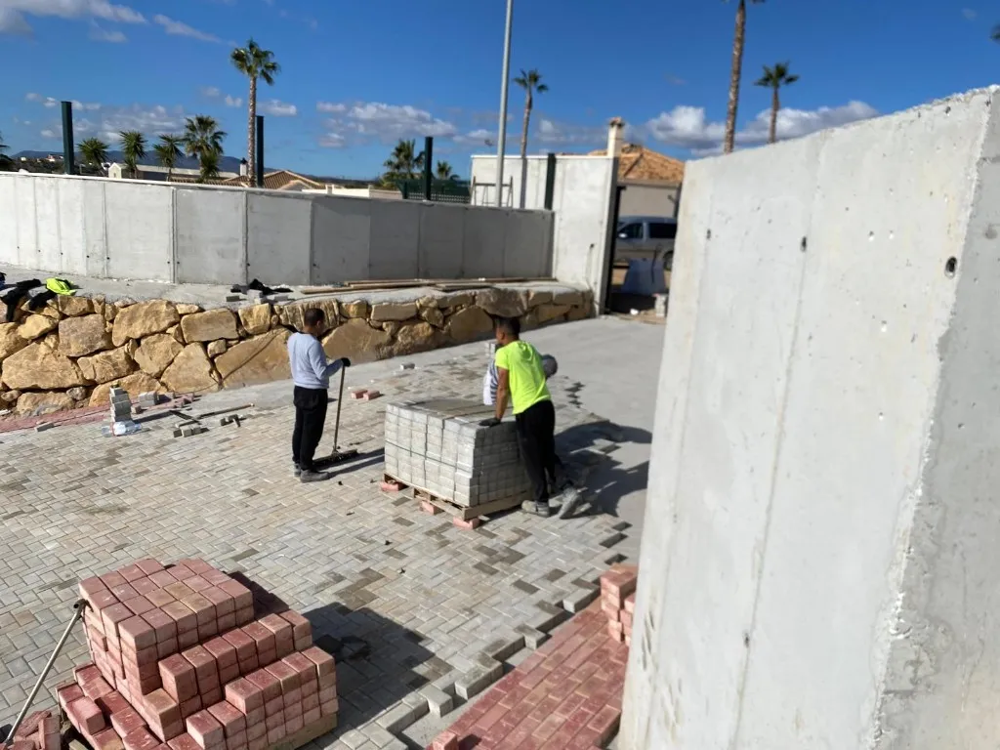

Especialización
Pavimentación y urbanización como foco exclusivo. No somos una constructora generalista: cada equipo está orientado a suelos, aceras y obra de pavimentación.

Especialistas en pavimentación
Especialización técnica, cumplimiento de plazos y ejecución planificada para minimizar la interferencia en su obra.
Pavimentación y urbanización como foco exclusivo. No somos una constructora generalista: cada equipo está orientado a suelos, aceras y obra de pavimentación.
Ejecución técnica rigurosa y materiales adecuados a cada uso. Preparamos, ejecutamos y controlamos cada fase para un resultado duradero.
Plazos y alcance acordados, con coordinación continua en obra. Planificamos la intervención para reducir tiempos muertos y sorpresas.
Trayectoria en pavimentos para entornos industriales, logísticos y de uso público. Conocemos las exigencias de cada tipo de cliente.
Servicios
Ejecutamos cada fase de la obra de pavimentación — desde la preparación del terreno hasta la entrega lista para uso — con equipos propios y planificación adaptada a constructoras, empresas y administraciones públicas.
Ejecución de pavimentos continuos y sistemas de rodadura para accesos, calles industriales y áreas de servicio. Preparación de base, extendido, compactación y acabado según especificación del proyecto.
Consultar pavimentaciónInstalación de pavimento articulado en urbanizaciones, plazas y accesos. Replanteo, base granular, colocación, sellado de juntas y remates con bordillo.
Consultar adoquinesObra completa de urbanización exterior: movimiento de tierras, drenaje, pavimentación y remates. Coordinación por fases para integrar la intervención en el calendario de obra.
Consultar urbanizaciónConstrucción y renovación de aceras y zonas peatonales. Nivelación, pendientes de evacuación, acabado antideslizante y transición con calzada.
Consultar aceradosSuministro y colocación de bordillos de confinamiento, delimitación y remate. Alineación, asiento y unión con pavimento existente o nuevo.
Consultar bordillosMovimiento de tierras, explanación, drenaje, bases granulares y estructuras auxiliares vinculadas al pavimento. Trabajos previos y complementarios que condicionan el resultado final.
Consultar obra civilPAVIMENTCIVIL
Trabajamos codo a codo con constructoras, empresas y administraciones que necesitan un contratista de pavimentación fiable, técnico y cumplidor.
Nuestro foco es la pavimentación y la urbanización exterior. Asumimos la responsabilidad de cada fase con equipos propios y comunicación continua con la dirección de obra.

Pavimentación como actividad central, no como línea accesoria de una constructora general.
Alcance, plazos y calidad de ejecución acordados y comunicados en cada fase.
Respuesta técnica ante imprevistos de obra con criterio y agilidad.
Por qué PAVIMENTCIVIL
Aportamos tranquilidad a la dirección de obra: planificamos la intervención, cumplimos plazos acordados y resolvemos incidencias con criterio técnico. Un socio especializado, no una línea más del presupuesto.
Pavimentación y urbanización como actividad central. Equipos y procesos orientados a suelos, aceras y remates, no a obra generalista.
Replanteo, fases y coordinación con el calendario de obra para reducir interferencias y tiempos muertos.
Alcance y plazos acordados de antemano, con comunicación continua sobre avances e hitos.
Preparación de base, materiales adecuados al uso y control en cada fase para un resultado duradero.
Respuesta técnica ante cambios de nivel, drenaje o replanteo sin derivar el problema a terceros.
Colaboración continuada con constructoras, empresas y administraciones que repiten obra tras obra.
Tipos de cliente
Adaptamos la planificación y la ejecución al contexto de cada cliente: plazos de obra, exigencias técnicas y coordinación con otros gremios.
Necesidad
Subcontratar pavimentación sin retrasar el calendario ni generar retrabajos.
Cómo ayudamos
Ejecución por fases, coordinación con dirección de obra y alcance técnico cerrado desde el replanteo.
Necesidad
Intervenciones en vía pública con plazos, accesibilidad y continuidad del servicio.
Cómo ayudamos
Planificación de cortes, acerados accesibles, bordillos y remates conforme a especificación municipal.
Necesidad
Pavimentar accesos, aparcamientos y zonas de servicio con mínima afectación a la actividad.
Cómo ayudamos
Ventanas de trabajo acordadas, señalización de zonas y entrega lista para uso.
Necesidad
Urbanizaciones nuevas con plazos de entrega y remates homogéneos en toda la promoción.
Cómo ayudamos
Adoquines, acerados, bordillos y pavimentación continua con criterio unitario en fase y acabado.
Necesidad
Áreas exteriores, accesos y aparcamientos con tráfico peatonal y rodado intenso.
Cómo ayudamos
Sistemas de pavimento acordes al uso, drenaje y transiciones seguras entre zonas.
Obra ejecutada
Intervenciones en vía pública, urbanizaciones y espacios exteriores. Cada proyecto se planifica por fases para cumplir plazos y minimizar interferencias en obra.
Ejecución de pavimento continuo para zonas de rodadura y áreas de servicio.
Colocación de pavimento articulado en accesos y espacios exteriores.
Construcción y renovación de aceras con pendientes y remates.
Preparación de base, drenaje y remates en intervención exterior.
Cómo trabajamos
Coordinamos cada fase con la dirección de obra para que la pavimentación encaje en el calendario general del proyecto.
Visita en obra, mediciones y definición del alcance técnico acordado con la dirección de faena.
Programación por fases, ventanas de trabajo y coordinación con otros gremios.
Preparación de base, extendido o colocación, compactación y control en cada fase.
Bordillos, juntas, transiciones y comprobación dimensional antes del uso.
Entrega conforme al alcance acordado y comunicación de incidencias resueltas en obra.
Antes de contactar
Resolvemos las dudas más frecuentes de constructoras, empresas y administraciones antes de solicitar presupuesto.
Pavimentación continua, colocación de adoquines, urbanización exterior, acerados, bordillos y obra civil de pavimentación. Cada intervención se define en replanteo según la especificación del proyecto.
Sí. Trabajamos con constructoras, empresas privadas y administraciones públicas. Coordinamos fases y remates con la dirección de obra para integrarnos en el calendario general del proyecto.
Nuestra base operativa está en Molina de Segura (Murcia). Desarrollamos proyectos en la Región de Murcia y zonas limítrofes. Pendiente de confirmar: cobertura en otras provincias.
Completa el formulario de contacto con los datos básicos de tu obra. Revisamos la información y, si encaja con nuestro alcance, acordamos los siguientes pasos técnicos. Pendiente de confirmar: plazo habitual de respuesta.
Ubicación, tipo de intervención, superficie aproximada, plazo previsto y cualquier especificación técnica o plano disponible. Cuanta más información aportéis, más precisa será la primera valoración.
Pendiente de confirmar: disponibilidad y alcance de mantenimiento y reparación de pavimentos existentes. Indica el tipo de deterioro y la ubicación en el formulario y evaluaremos si podemos asumir la intervención.
Si tu proyecto requiere una solución específica, estudiaremos tu caso y te asesoraremos sobre la mejor opción.
Cuéntanos qué necesitas y prepararemos una propuesta adaptada a las características de tu obra.
Los campos marcados con asterisco son obligatorios.